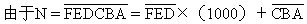

第六讲 能被30以下质数整除的数的特征
大家知道，一个整数能被2整除，那么它的个位数能被2整除；反过来也对，也就是一个数的个位数能被2整除，那么这个数本身能被2整除.因此，我们说“一个数的个位数能被2整除”是“这个数能被2整除”的特征.在这一讲中，我们通过寻求对于某些质数成立的等式来导出能被这些质数整除的数的特征。
为了叙述方便起见，我们把所讨论的数N记为：

有时也表示为
我们已学过同余，用mod2表示除以2取余数.有公式：
①N≡a0（mod2）
②N≡a1a0（mod4）
③N≡a2a1a0（mod8）
④N≡a3a2a1a0（mod16）
这几个公式表明一个数被2（4，8，16）整除的特性，而且表明了不能整除时，如何求余数。
此外，被3（9）整除的数的特征为：它的各位数字之和可以被3（9）整除.我们借用同余记号及一些运算性质来重新推证一下.如（mod9），如果，
N=a3a2a1a0=a3×1000+a2×100+a1×10+a0
＝a3×（999＋1）＋a2×（99+1）＋a1×（9+1）+a0
＝（a3+a2+a1+a0）+（a3×999+a2×99+a1×9），
那么，等式右边第二个括号中的数是9的倍数，从而有
N≡a3＋a2+a1+a0（mod9）
对于mod3，理由相仿，从而有公式：
⑤N≡（…＋a3＋a2＋a1＋a0）（mod9），
N≡（…+a3＋a2＋a1＋a0）（mod3）。
对于被11整除的数，它的特征为：它的奇位数字之和与偶位数字之和的差（大减小）能被11整除。
先看一例.N=31428576，改写N为如下形式：
N=6＋7（11-1）＋5（99＋1）＋8（1001-1）＋2（9999＋1）＋4（100001-1）+1（999999+1）+3（10000001-1）
=6-7+5-8+2-4+1-3+7×11+5×99＋8×1001+2×9999+4×100001+1×999999＋3×10000001。
由于下面这两行里，11、99、1001、9999、100001、999999、10000001都是11的倍数，所以
N=6-7＋5-8＋2-4＋1-3（mod11）。
小学生在运算时，碰上“小减大”无法减时，可以从上面N的表达式最后一行中“借用”11的适当倍数（这样，最后一行仍都是11的倍数），把它加到“小减大”的算式中，这样就得到：
N≡11＋6-7＋5-8＋2-4＋1-3≡3（mod11）。
现在总结成一般性公式（推理理由与例题相仿）.
则N≡（a0-a1+a2-a3＋a4-a5＋a6-a7+…）（mod11）
或者：
⑥N≡（（a0+a2+a4+…）-（a1+a3+a5+…））（mod11）
（当不够减时，可添加11的适当倍数）。
因此，一个自然数能被11整除的特征是：它的奇位数字之和与偶位数字之和的差（大减小）能被11整除。
我们这里的公式不仅包含整除情况，还包含有余数的情况。
下面研究被7、11、13整除的数的特征。
有一关键性式子：7×11×13=1001。
所以N能被7、11、13整除，相当于
能被7、11、13整除.总结为公式：
（mod11）；（mod13）
当倍数）。
表述为：判定某数能否被7或11或13整除，只要把这个数的末三位与前面隔开，分成两个独立的数，取它们的差（大减小），看它是否被7或11或13整除。
此法则可以连续使用。
例：N=31428576.判定N是否被11整除。

因为822不能被11整除，所以N不能被11整除。
例：N＝215332.判定N是否被7、11、13整除。
由于117＝13×9，所以117能被13整除，但不能被7、11整除，因此N能被13整除，不能被7、11整除。
此方法的优点在于当判定一个较大的数能否被7或11或13整除时，可用减法把这个大数化为一个至多是三位的数，然后再进行判定。
如N＝987654321.判定N能否被13整除？
而654=50×13+4，所以原数不能被13整除.如直接计算，很费力：
987654321=75973409×13＋4。
下面研究可否被17、19整除的简易判别法.回顾对比前面，由等式1001＝7×11×13的启发，才有简捷的“隔位相减判整除性”的方法.对于质数17，我们有下面一些等式：
17×6＝102，17×59=1003，17×588=9996，
17×5882=99994，
我们不妨从17×59=1003出发。
因此，判定一个数可否被17整除，只要将其末三位与前面隔开，看末三位数与前面隔出数的3倍的差（大减小）是否被17整除。
例：N=31428576，判定N能否被17整除。
而429=25×17+4，所以N不能被17整除。
例：N＝2661027能否被17整除？
又935=55×17。
所以N可被17整除。
下面来推导被19整除的简易判别法。
寻找关键性式子：19×52=988，19×53=1007.

因此，判定一个数可否被19整除，只要将其末三位与前面隔开，看末三位与前面隔出数的7倍的差（大减小）是否被19整除。
例：N＝123456789可否被19整除？

又603＝31×19+14，所以N不能被19整除。
例：N=6111426可否被19整除？
又57=3×19，所以N可被19整除：321654×19=6111426。
下面来推导被23、29整除的简易判别法。
寻找关键性式子，随着质数增大，简易法应该在N的位数多时起主要作用，现有
23×435＝10005，29×345=10005，
由此启发得到一个末四位隔开的方法：

因此，判定一个数可否被23或29整除，只要将其末四位与前面隔开，看末四位与前面隔出数的5倍的差（大减小）是否被23或29整除。
例：N＝6938801能否被23或29整除？
又5336＝23×232＝23×29×8，
所以很快判出N可被23及29整除。
最后，如读者还想寻找以上数的更简明判别法，或被31以上质数整除的判别法，都是可以去探索的.把这一节得到的公式简列于下：

（可在上述这些同余式的右端加上相应质数的适当倍数）.
后两式没有证明，读者不难从999=37×27，992＝31×32启发出“隔位加”的判别法。